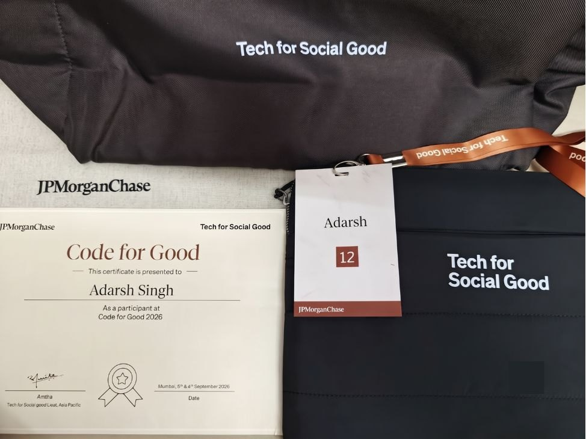

In March 2026 I applied to JPMorganChase's Software Engineer Program. In September I spent 24 hours at their Mumbai office building software for a nonprofit at Code for Good, and after the event I received an offer for the Summer Internship 2027. When I started, I could not find one place that explained the whole process. This post is that place: every stage in order, what each one looks like, how I prepared, and what I would do differently.
In short
- It is part of the hiring process. Code for Good is a 24-hour hackathon for nonprofits, and for JPMorganChase's Software Engineer Program (SEP) it is the final stage before internship offers.
- Four stages: an application, a coding test on HackerRank, a recorded video interview on HireVue, and the in-person hackathon.
- The coding test: two questions in 60 minutes, one easy and one medium, proctored, with no negative marking.
- The video interview: two behavioural questions, about 30 minutes, recorded in one sitting with no interviewer on the call.
- The hackathon: JPMorganChase forms the teams. In Mumbai, three nonprofits brought one challenge each, every team worked on one of them with mentors from the firm, and judging ran in two rounds, with one winning team per challenge.
- Winning is not the only route. Internship offers come after the event, and they are not limited to the winning teams.
- It takes time. From the first form in March to the offer, the process took about eight months, and most of it was waiting.
What Code for Good is
Code for Good is a hackathon that JPMorganChase runs under its Tech for Social Good initiative. Nonprofit organisations bring problems from their actual work, and student teams spend 24 hours building software for them, with engineers from the firm as mentors.
For students applying to the Software Engineer Program, it is also the last step before offers. The coding test and the video interview decide who gets invited, and internship offers are made after the event. So the hackathon is not only a competition. For 24 hours, people from the firm work alongside you and see how you understand a problem, work with a team you have just been given, take feedback and explain your decisions. It is worth preparing for it with that in mind.
Who can apply
These are the criteria my college's placement cell shared for the 2026 cycle. They can change from year to year and between colleges, so check the notice you receive.
- B.E. or B.Tech. students of the 2028 graduating batch, which meant applying in the second year
- Computer Science, Information Technology, or Artificial Intelligence and Data Science
- An aggregate CGPA of at least 8.5 out of 10
- No active backlogs
Note the timing. You apply in the second year, attend the hackathon in the third year, and the internship is in the summer after the third year. If you are in your first year now, the CGPA cut-off is the part to watch.
The timeline
| Stage | When (2026) | What it was |
|---|---|---|
| Registration | 8 March | A short Code for Good registration form |
| Application | 10 to 12 March | The SEP application on the JPMorganChase careers page |
| Coding test | 25 to 26 March | HackerRank: two questions, 60 minutes |
| Video interview | 27 to 30 March | HireVue: two behavioural questions, about 30 minutes |
| Shortlist | 2 August | Invitation email, with four days to confirm |
| Hackathon | 5 to 6 September | 24 hours at the JPMorganChase office in Mumbai |
| Offer | After the event | Summer Internship 2027 offer through the placement cell, to accept by 4 November |
Stage 1: The application
The application window was only three days long, from 10 to 12 March. Have an updated resume ready before the notice arrives, so you are not writing it in a hurry. One page with your projects, what you built in each, and links to the code is enough.
Stage 2: The coding test
Format
- A proctored test on HackerRank
- Two coding questions in 60 minutes in total
- One easy question and one medium question
- No negative marking
How I approached it
I read both questions before writing any code. I solved the easy one first and made sure it passed completely, which left most of the hour for the medium one. Before submitting each, I ran it on edge cases with custom input, such as empty input, a single element and the largest allowed values. The sample cases rarely cover those, and the hidden test cases usually do.
How to prepare
- Practise easy and medium problems on arrays, strings, hashing, sorting, two pointers, greedy methods and basic dynamic programming.
- Time yourself: one easy and one medium problem in 60 minutes, without looking anything up.
- Solve a few problems on HackerRank itself, so its editor and the way it reads input are familiar on the day.
Stage 3: The video interview
If you clear the coding test, you get a HireVue link. HireVue is a one-way recorded interview: a question appears on screen and your answer is recorded on camera. There is no interviewer on the call, so there is no one to ask for clarification.
Format
- Two questions, both behavioural: the kind that ask why you want to join, or how you handled a situation in a team. Nothing technical.
- About 30 minutes in total
- Completed in one sitting, within a window of a few days
The instructions screen tells you how much time you get to prepare and to answer, and whether retakes are allowed. Read it carefully before you start.
How to prepare
- Prepare four or five short stories from your projects, hackathons or college work: a problem you solved, a time you worked in a team, a mistake and what you changed after it. Most behavioural questions can be answered with one of them.
- Structure each answer as the situation, what you did, and what came of it. Keep it short and specific.
- Practise saying them out loud to your phone camera. It feels very different from answering a person.
- Before starting, check the camera, microphone, lighting and internet connection, and sit in a quiet room. Look at the camera, not at your own face on the screen.
The wait, and the invitation
After the interview, nothing happened for a little over four months. On 2 August, my placement cell shared the shortlist, and I received an email from JPMorganChase Campus Recruiting inviting me to Code for Good on 5 and 6 September in Mumbai.
The email had a short checklist, and one item mattered more than the rest: confirm attendance through the RSVP link within four days. If you miss that deadline, the invitation is treated as declined. After I confirmed, a confirmation email came, followed by travel guidelines with booking and reimbursement instructions. Closer to the event, the organisers shared the schedule, the technology setup, the team structure, the judging process and a list of things to bring.
The 24 hours
Teams. JPMorganChase forms the teams, so you do not choose your teammates. My team had four members, and my teammates were from other colleges. Expect to work with people whose stack and habits differ from yours, and be ready to work outside your favourite framework.
The event ran from 1:45 PM on Saturday to 12:30 PM on Sunday. Roughly, it went like this:
- Saturday afternoon: kick-off. An opening session, then presentations from the three participating nonprofits, each bringing one challenge. Every team was given one of the three. Ours came from the Institute of Social Responsibility and Accountability (ISRA).
- The nonprofit Q&A. We met ISRA's representatives and asked how their work actually happens day to day, and where it gets stuck. Looking back, this was the most useful hour of the event.
- Planning with mentors. Our mentors, engineers from JPMorganChase, kept bringing us back to what ISRA needed and what could be shown working by the morning. Before writing code, we agreed on the data model and the API contract so that we could build in parallel.
- Saturday evening: building. We built in thin slices that worked end to end: first a record going from the field form into a review queue, then the checks and flags, then corrections, then the dashboard.
- The night: integration. Joining four people's work into one flow brought merge conflicts and parts that worked alone but not together. We fixed them as they came up and kept testing the full path.
- Sunday morning: round 1. We stopped adding features and prepared a five-minute pitch. The judges went from desk to desk, and each team pitched and demoed its work at its own desk, followed by questions.
- Final round and closing. Round 1 is an elimination round. Two teams per challenge, six in all, were shortlisted for the final round. Every other team stays until the end of the event, when one winning team per challenge, three in all, is announced at the closing.
Mentors and volunteers were around through the night, and we also had time to talk with engineers at the firm about their work.
Our challenge, and what we built
ISRA helps vulnerable communities get access to government schemes and benefits. Its field staff onboard beneficiaries in villages, collect their documents and apply to schemes on their behalf. District heads then verify the records, and an admin team gives final approval. As the numbers grow, manual entry and checking lead to incomplete records, duplicate entries and slow approvals, and ISRA also needs better ways to reach beneficiaries with information.
Our idea was to catch problems as early as possible and let people review only the exceptions. What we built, in short:
- A mobile form for field staff that changes per scheme and validates as you type, so bad data is blocked at entry
- A duplicate check that warns when the same person seems to be registered twice, even under a different spelling
- Document checks: blur and lighting checks when the photo is taken, and OCR that compares what a document says with what was typed
- A review queue for district heads, ranked by risk, where clean records can be approved together and a wrong field is sent back on its own instead of the whole record
- An assisted check against a government portal, in which the admin still solves the CAPTCHA and the tool only fills in, captures and compares (we used a mock portal for the demo)
- A dashboard showing where records get stuck and why
| Part | What we used |
|---|---|
| Frontend | React, Vite and Tailwind CSS, as an installable web app (PWA) |
| Backend | Python with FastAPI |
| Database | PostgreSQL |
| Documents | Tesseract OCR and OpenCV |
| Matching | rapidfuzz for fuzzy name matching |
| Portal check | A Chrome extension and a small mock portal |
I worked mainly on the backend and the record workflow, along with the OCR and document checks, and spent a good part of the night on integration.
You do not need to know these particular tools before the event. What helps more is being comfortable with one frontend framework, one backend framework, Git, and getting something deployed quickly.
How judging works
Judging ran in two rounds.
Round 1 happened on Sunday morning at the teams' own desks. The judges came to each desk, and every team had about five minutes to pitch and demo, followed by questions. In our five minutes we covered the problem as we understood it, our approach, and a live demo that followed one beneficiary's record from field capture to final approval.
The final round. Round 1 is an elimination round. After all the desk pitches, two teams per challenge, six in all, were shortlisted to present again in the final round. The teams that are not shortlisted do not leave early: everyone stays until the closing, when one winner per challenge is announced, so three winning teams in all.
Plan for five minutes. One short slot at your desk means the pitch and the demo have to be rehearsed and tight. Decide in advance which single flow you will show, and keep everything else for the questions.
Internship offers come after the event and are not limited to the winning teams. The mentors are with you for the full 24 hours, so treat the whole event, not only the pitch, as part of the process.

The offer, and the role
The offer came through my college's placement cell, for the Summer Intern 2027 role in the Software Engineer Program.
- About two months, starting in May or June 2027
- Based in Mumbai, Bengaluru or Hyderabad
- Acceptance had to be confirmed through the placement cell by a fixed date, and accepting signs you out of further campus placements
- The formal offer letter comes closer to the joining date, after a form with personal details and pre-employment screening
What I would do differently
- Show less, in more depth. Our demo tried to cover a lot in five minutes. Fewer features, shown properly, explain the work better.
- Write the scope down in the first hour. A written list of what to build first, and what to drop, saves long discussions late at night.
A checklist if you are applying
- Keep your CGPA above the cut-off, and clear any backlogs early.
- Have a one-page resume ready before the application notice arrives.
- Practise one easy and one medium problem in 60 minutes, on HackerRank itself.
- Prepare four or five stories for behavioural questions, and practise them on camera.
- Reply to the invitation within the RSVP deadline.
- Be comfortable with one frontend framework, one backend framework, Git and quick deployment.
- At the event, spend the first hours understanding the nonprofit's problem before writing code.
- Rehearse a five-minute pitch with one clear demo flow.
Common questions
Do I need to win to get the offer? No. Internship offers are made after the event and are not limited to the winning teams.
Can I choose my teammates? No. JPMorganChase forms the teams. Mine were from other colleges.
Do I get the problem statement in advance? No. The nonprofits present their challenges at the start of the event. Reading a few challenge statements from past years helps you get a feel for the kind of problems nonprofits bring.
Which tech stack should I know? Any common one works, as long as you can adjust to your team. We used React and FastAPI.
Is it online? No. It is in person, at a JPMorganChase office. The firm shared travel guidelines with booking and reimbursement instructions.
If you are applying this year and something here is unclear, message me on LinkedIn.